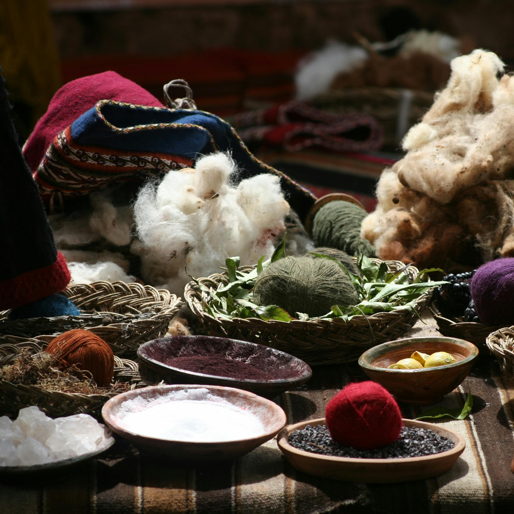
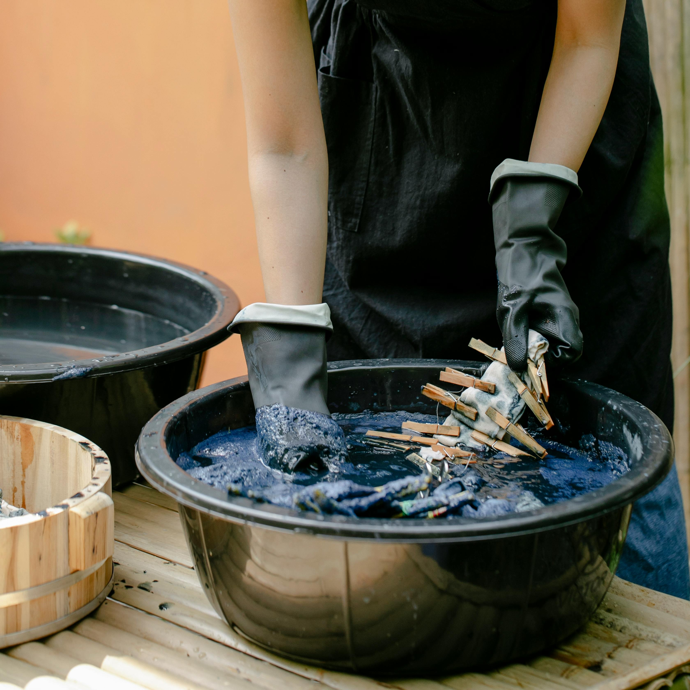
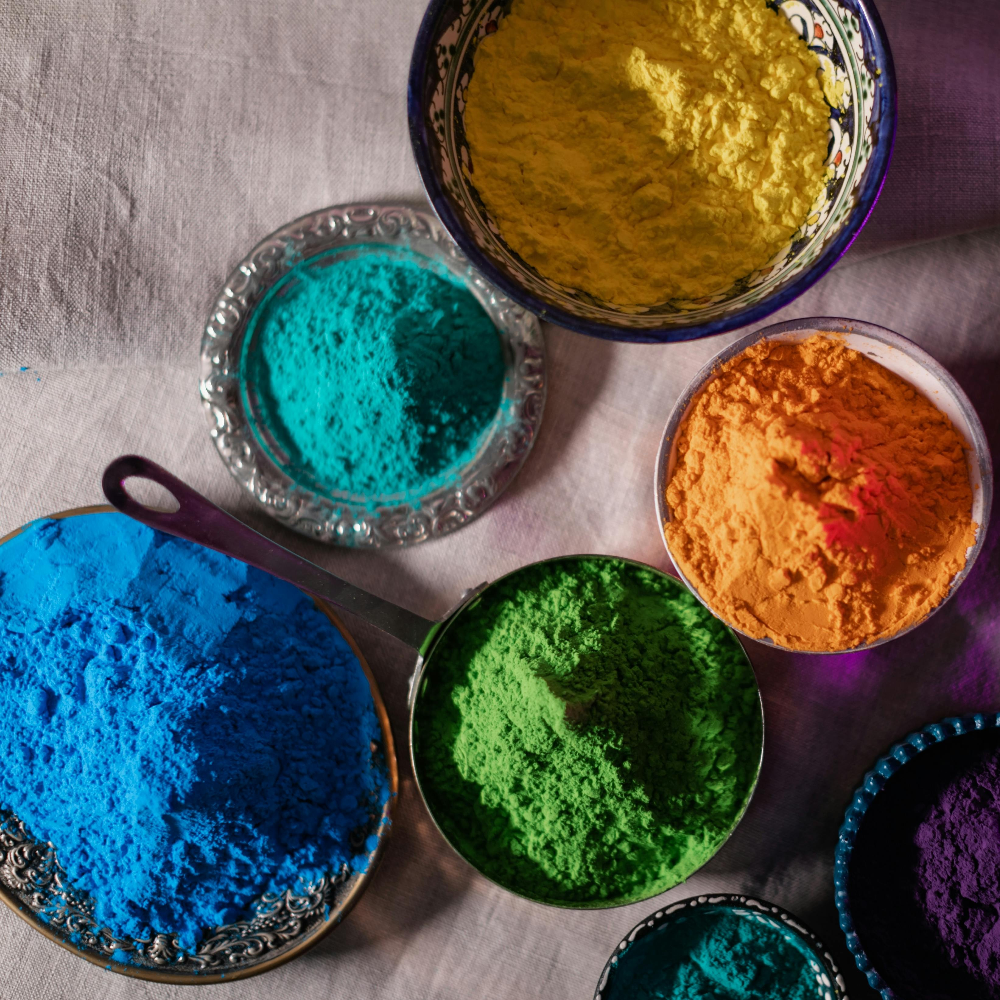

Welcome to Green Stag Natural Dyes!
We're excited to have you!
Not sure where to start? Check out the following ideas:

Natural Dyes
Want to know more about natural dyes in general? Head over here and find information on the history of natural dyes, as well as what people are doing with them in the modern day.

Do It Yourself
Interested in trying out natural dyes at home, but not sure where to start? Look no further! Check out our articles on the vocabulary, supplies, and processes surrounding the use of natural dyes.

Dye Database
Looking for a new dye to try out, or information on a specific dye? Check out our database! Search dyes by name, or use the filters to find dyes in specific colors or from specfic locations!